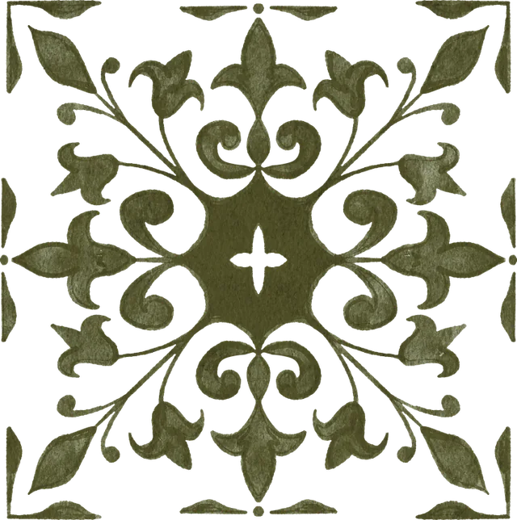
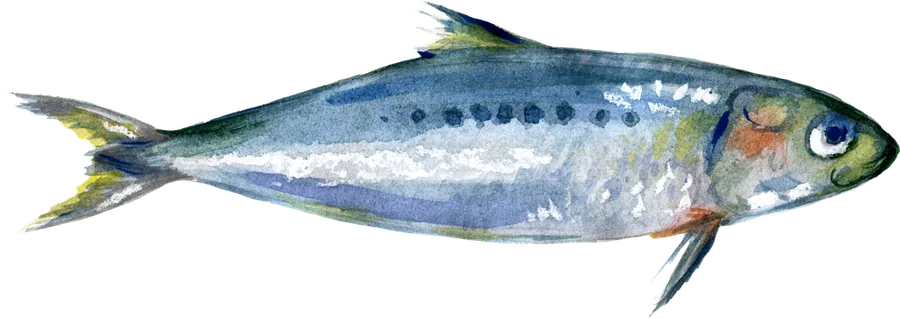

the Algarve
We come back to the Algarve every summer: beach, pool and long dinners with a full house. The door stays open to let the wind through, and nobody leaves the table for at least three hours.
Our wedding is near Tavira, a little town where life moves at its own pace – whitewashed houses, terracotta roofs, cobbled streets and a river running through it, with salt flats, sandy beaches and the Atlantic just beyond.
The celebration is up in the hills at Hotel Quinta do Marco, 15 minutes from town. If you come early or stay longer, here is the Algarve we love – from Tavira to the wild west coast.


our favourites
Basemap: Azulejo Complete by Marek Hoffmann · © OpenStreetMap contributors, Natural Earth
Got a few extra days? Drive the west coast from Lagos up to Sines: fishing villages, big cliffs and wild, windy beaches. Our favourites are Castelejo, Bordeira, Amado and Odeceixe.
Eleven dishes to try
- Pastel de natacustard tart
- Bola de Berlimthe beach doughnut
- Bacalhau com natassalt cod with cream
- Bacalhau à Brássalt cod with egg & fries
- Polvo à lagareiroroasted octopus
- Sardinhas & peixe grelhadogrilled fish
- Camarão ao alhogarlic prawns
- Amêijoas à Bulhão Patoclams
- Cataplanathe Algarve’s own
- Arroz de marisco & arroz de tomateseafood rice & tomato rice
- Porco pretoblack Iberian pork